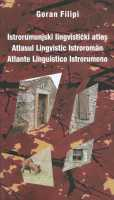

Faraguna Without a Raincoat and Poropat Without a Bed
Tidbits about home: Goran Filipi – Istro-Romanian Linguistic Atlas
The atlas is tri-lingual (Croatian, Romanian and Italian), and Dr. Filipi collected the material for it from 1995 to 2001
Pola – The Istro-Romanian Linguistic Atlas by Goran Filipi, which documents the speech from the villages of Žejane and Ćepićko polje, is apparently released in the edition by Mediterranean Scientific Society. Even though the speakers of Istro-Romanian language (also called Cici, Vlasi or Ciribirci) are holding on to their speech, it is because of the poverty of the area where they live - close to extinction. Istro-Romanian is not taught in school not even as an elected subject, it is not even used in the church, and from the 1500 speakers after WWII, now remain only about 200.
The atlas is tri-lingual (Croatian, Romanian and Italian), and Dr. Filipi was collecting the material for it from 1995 to 2001, talking to speakers in Šušnjevica, Nova Vas, Kostrčan, Jasenovik, Miheli, Letaj, Brdo, Škabić, Trnkovć, Zanković and Žejane. The questionnaire consisted of 1,898 standardized questions, which encompassed concepts from various semantic fields, for example, weather conditions, habits, marriage and family, home and possessions, animals, plants, food, calendar and so on.
For each village notations were made of the types of words with their corresponding accents. Where he found complete expressions and sentences, he kept notes of the ones he found interesting and important. To the speech of these Istrian villages he also added the speech of the village of Rudna Glava in the north-eastern Serbia as a comparison with a different Romanian speech on the other side of the Danube, as well as Chacavian speech from Brgud and Cepici.
The atlas contains many interesting things: Filipi writes that the first Vlach livestock herders in Istria are mentioned in the 12th century, however, the Istro-Romanians are probably descendants of the Balkan Vlahs who came from southern Velebit at the end of 15th century and went to Krk (where Vlaski was spoken until 1819) and from there they moved on to Istria. They consider themselves Croats, or regionally as Istrians, and they are bilingual (Istro-Romanian and Croatian) from the start.
Istro-Romanian was much more widespread than it is today, which is evident by names such as Katunarić, Licul, Faraguna (translates to "without a shepard’s raincoat") or Poropat (translates to "without a bed") and then topographic names as Katun, Kature and Fečori. "It is conceivable that Vlaski will last longer in foreign countries (where they immigrated) than at home" said Prof. Dr. August Kovačec pessimistically, who together with Dr. Petru Neiescu is the editor of the atlas.
The Istro-Romanian Linguistic Atlas is important due to its large structure and it documents radical changes, which each twenty years occur in dialects. The edition also contains the map with photographs. This atlas is part of the international scientific project that started with cooperation with the University of Trieste, and before the Istro-Romanian atlas, they released the Istriot linguistic atlas, which dealt with the speaking of south-western Istria before Venetian rule.
English translation: Pino Golja for istrianet.org

Faraguna bez kabanice i Poropat bez kreveta
Prilozi o zavičaju: Goran Filipi – Istrorumunjski Lingvistički Atlas
Atlas je trojezičan (hrvatski, rumunjski, talijanski), a dr. Filipi je za njega prikupljao građu od 1995. do 2001. godine
Pula – Istrorumunjski lingvistički atlas dr. Gorana Filipija, koji bilježi govor mještana sela Žejane i sela Ćepićkog polja, nedavno je objavljen u izdanju Znanstvene udruge Mediteran. Iako govornici istrorumunjskog (drugi ih zovu Ćići, Vlasi ili Ćiribirci) drže do svog govora, on je, zbog siromaštva kraja u kojem žive – pred izumiranjem. Istrorumunjski se ne uči u školi ni kao izborni predmet, na njemu se ne propovijeda ili moli u crkvi, a od 1.500 govornika, koliko ih je bilo poslije rata, spali su na današnjih 200.
Atlas je trojezičan (hrvatski, rumunjski, talijanski), a dr. Filipi je za njega prikupljao građu od 1995. do 2001. godine, ispitujući četrdesetak govornika u Šušnjevici, Novoj Vasi, Kostrčanu, Jasenoviku, Mihelima, Letaju, Brdu, Škabićima, Trnkovcima, Zankovcima te Žejanama. Upitnik se sastojao do 1.898 standardiziranih pitanja koja obuhvaćaju pojmove iz različitih semantičkih polja, npr. vremenske prilike, običaji, brak i obitelj, dom i posjed, životinje, biljke, hrana, kalendar i sl.
Za svako je selo zabilježen odgovarajući oblik riječi, s odgovarajućom grafijom i naglascima. Tamo gdje ih je pronašao, autor je u bilješkama zapisao i čitave izraze ili rečenice koje je smatrao zanimljivima ili važnima. Istarskim je selima dodao govor mjesta Rudna Glava u sjeveroistočnoj Srbiji, radi usporedbe s jednim drugim rumunjskim govorom s ove strane Dunava, te čakavske govore iz Brguda i Ćepića.
U atlasu se, naravno, može otkriti štošta zanimljivoga: Filipi piše da se prvi vlaški stočari u Istri spominju u 12. stoljeću, a Istrorumunji su po svoj prilici potomci balkanskih Vlaha koji su koncem 15. stoljeća s područja južnog Velebita dovedeni na Krk (gdje se vlaški govorio do 1819.) te zatim u Istru. Izjašnjavaju se uglavnom kao Hrvati, ili regionalno kao Istrani, a dvojezični (istrorumunjski – hrvatski) su vjerojatno od samog početka.
Istrorumunjski je nekad bio puno rašireniji nego danas, na što ukazuju prezimena poput Katunarić, Licul, Faraguna ("bez pastirske kabanice") ili Poropat ("bez kreveta") te toponimi poput Katun, Kature ili Fečori. "Za pretpostaviti je da će vlaški duže trajati u prekomorskim zemljama (kamo su mnogi odselili), nego doma," pesimistično zaključuje prof. dr. August Kovačec, koji je uz dr. Petrua Neiescua recenzent atlasa.
Istrorumunjski lingvistički atlas važan je zbog svoje velike građe, a dokumentira i radikalne promjene koje svakih dvadeset godina nastaju u dijalektu. Izdanje sadrži i zemljovid, a upotpunjeno je i fotografijama. Atlas je dio međunarodnog znanstvenog projekta nastalog u suradnji s Tršćanskim sveučilištem, a prije Istrorumunjskog, objavljen je i Istriotski lingvistički atlas, koji je obrađivao stare predmletačke govore jugozapadne Istre.
Valter Milovan
July 25, 2003
© 2003 Novi List